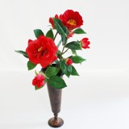

椿

特徴：先の尖った卵型のつやと厚みのある葉を持ち、密度高く葉を茂らせた枝の先に杯状の花を咲かせます。
花色は、赤、ピンク、白、複色。花びらには厚みがあり、花芯にはこんもりと黄色のしべ類が集まっています。
不老不死を象徴する縁起の良い木です。日当たりの良い場所で管理するようにしましょう。
保水性、排水性の良い、肥沃な土壌を好みます。表土が乾いたらたっぷりと水やりします。
葉の色つやの良いもの、株元にぐらつきがなく、主幹がしっかりとしたものを選びましょう。どの位置で切っても芽吹きます。
アネモネ
特徴：気温が低めで暗い場所のほうが日持ちする。
直射日光は避け，涼しく風通しの良い場所に置く。
茎を水の中で斜めに切ることで切り口が広がり水揚げがよくなる。